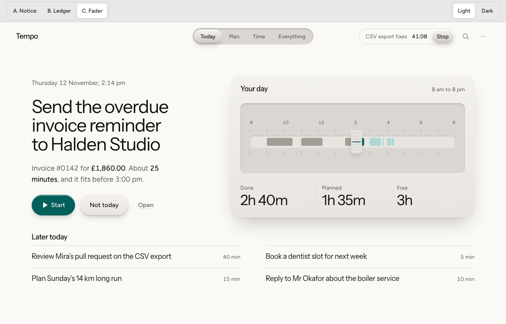
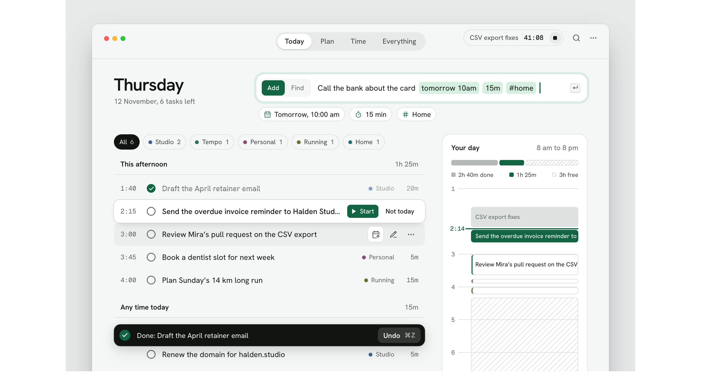
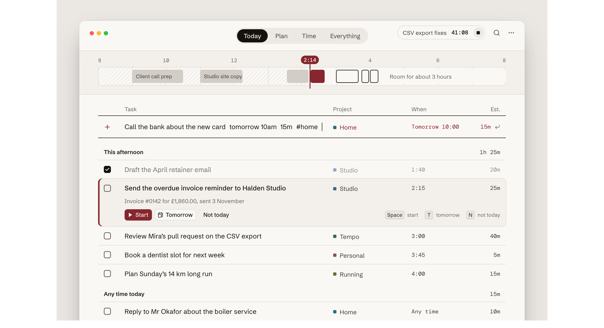
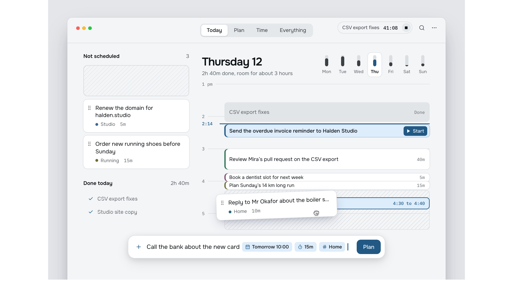

Tempo v2, the Today screen
Round 3. Today as a dashboard: your tasks, an input and the day, with no single task blown up. Fader stays as it is. Each new direction keeps Fader’s centred tabs and tries a different kind of input. All four use the same day and the same tasks. None use orange, gradients or glows.
Baseline: C. Fader
From directions.html. Machined parts lit from above, the day as a fader track, lit teal Start.

G. Docket
A large date beside a command bar with an Add or Find switch. As you type, the bar shows what it understood as chips before you press Return. The list has the states a real day has: project filters with counts, a task finished a moment ago with its Undo toast, the selected task carrying Start, and quick actions on the row under the pointer. The day card opens with one bar for done, planned and free time above the hour column. Porcelain white and forest green.

Compared with Fader
- Fader's tabs and timer pill, unchanged.
- The most complete feedback layer: preview before adding, Undo after finishing (RC6).
- Filters make a long day manageable without leaving Today.
Watch out for
- The busiest of the three. Every piece earns its place, but there are many pieces.
- The day card is narrow, so block names get cut off.
H. Ledger
A day tape across the top, read like a ruler: the past is shaded, each hour has its rule, blocks carry their names where they fit, and now is a wine capsule riding the line. The input is the table's first row and fills its own columns as you type. The selected row opens one line deeper with what the task is about, its three verbs, and the keys that do them. Stone, ink and wine, set in Schibsted Grotesk with DM Mono for times.

Compared with Fader
- Fader's day across the top, flattened into a tape that also names finished work.
- Built for the keyboard: the selected row teaches its own shortcuts.
- The calmest of the three, and the closest to "modernist and premium".
Watch out for
- A table can feel like a spreadsheet; its type has to stay excellent.
- Wine red marks now. Change it if red reads as alarm to you.
I. Planner
The day is the page. The header pairs a large date with the week, each day showing how full it is. The mock is caught mid-plan: a task lifted out of Not scheduled is being carried over the day, with the slot it will land in shown underneath with its times. A composer at the bottom turns what it recognises into chips inside the field. Graphite and steel blue, set in Onest with IBM Plex Mono for times.

Compared with Fader
- Time becomes the layout itself, not a panel. You see how long things are.
- Planning by dragging, with the landing slot shown before you drop.
- The week strip shows a lighter day to move work to, at a glance.
Watch out for
- Very short tasks need a minimum height, so the day isn't exactly to scale.
- Close to a calendar app, so it overlaps with the Plan tab.
Against the section 7 questions
| Question | C. Fader | G. Docket | H. Ledger | I. Planner |
|---|---|---|---|---|
| Today shows | One big task, the day, a short list | Input, the full list, the day | Input inside the list, a day strip | The day as the page, unscheduled tasks, input |
| Input style | Not shown | Command bar with a chip preview | A table row that fills its own columns | Bottom composer with chips inside the field |
| Time as shape | Fader track, plus three numbers | Day column | Full-width strip | A day view with blocks sized by duration |
| Visual voice | Warm, tactile | Clean, light | Editorial, printed | Calm, tool-like |
| Navigation | All four: Today, Plan, Time and Everything centred in the title bar, with the timer pill on the right (kept from Fader) | |||
Earlier rounds are kept: round 1 (Meridian, Folio, Station) in shots/round-1, round 2 (the plainer versions of these three) in shots/round-2.